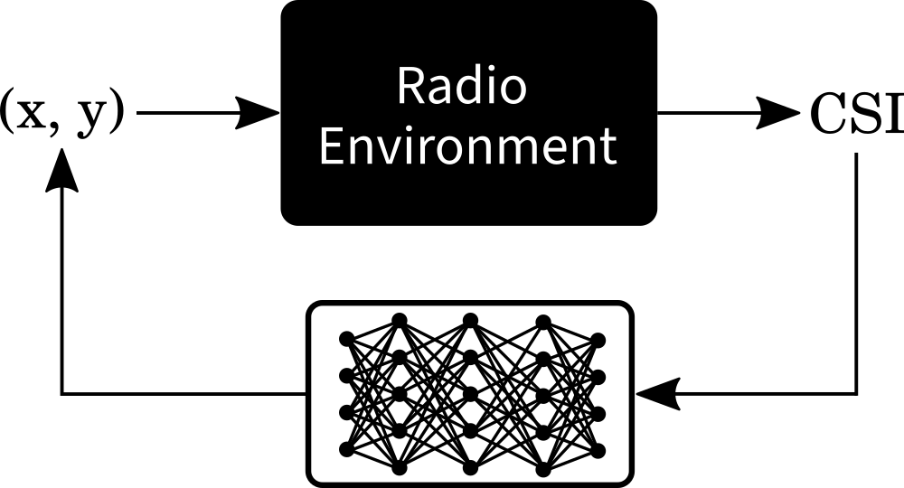

The Task

- A transmitter, continuously sending OFDM symbols, is mounted on top of a vacuum robot which performs multiple round trips inside the same area.
- The OFDM transmit signal is received by a massive MIMO 32-antenna array.
- The environment is assumed to be static for the duration of all robot round trips and we do not intend to generalize our model to different radio environments.
- Objective: Estimate the position of the transmitter inside the room (i.e., an indoor radio environment) purely based on the received OFDM signal.

The Dataset
For this tutorial, we use the dichasus-015x dataset.
DICHASUS uses a reference transmitter-based system architecture, which entails that measured phases may exhibit constant offsets caused by the reference transmitter channel.
Luckily, neural networks should be able to learn and adapt to such constant offsets, so, in contrast to classical methods, there is no need for us to compensate any of these offsets.
Before we can do any training, we must first load the dataset. Conveniently, DICHASUS datasets are provided in the TFRecords file format, which makes loading them with TensorFlow particularly simple. In the following, we use two complete robot round trips as training set and one round trip as test set:
#!/usr/bin/env python3
import tensorflow as tf
training_files = ["tfrecords/dichasus-0152-shifted.tfrecords", "tfrecords/dichasus-0153-shifted.tfrecords"]
test_files = ["tfrecords/dichasus-0154-shifted.tfrecords"]
feature_description = {
"csi": tf.io.FixedLenFeature([], tf.string, default_value = ''),
"pos-tachy": tf.io.FixedLenFeature([], tf.string, default_value = '')
}
def record_parse_function(proto):
record = tf.io.parse_single_example(proto, feature_description)
# Channel coefficients for all antennas, over all subcarriers, real and imaginary parts
csi = tf.ensure_shape(tf.io.parse_tensor(record["csi"], out_type = tf.float32), (32, 1024, 2))
# Position of transmitter determined by Leica MS60 Tachymeter with 20Hz update rate
pos_tachy = tf.ensure_shape(tf.io.parse_tensor(record["pos-tachy"], out_type = tf.float32), (3))
return csi, pos_tachy
training_set = tf.data.TFRecordDataset(training_files).map(record_parse_function)
test_set = tf.data.TFRecordDataset(test_files).map(record_parse_function)
# Optional: Cache datasets in RAM for faster training
training_set = training_set.cache()
test_set = test_set.cache()